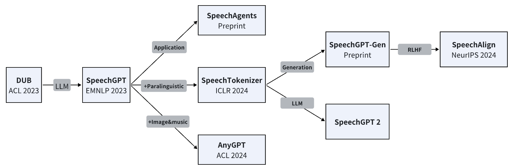

# About Me
Hi! I am a second year M.S. student of FudanNLPLab at Fudan University, supervised by Prof. Yaqian Zhou and Prof. Xipeng Qiu. I obtained my B.S. degree at Fudan University in 2022, advised by Prof. Fuliang Weng. Previously, I was interning at Bytedance AI Lab, mentored by Rong Ye.
My research interest focuses on Multi-Modal Large Language Models, Speech Foundation Models, and Multi-Modal Agents. I have developed several foundation models for speech, including SpeechGPT, SpeechTokenizer and SpeechAgents.
I am expected to graduate in June 2025 and seeking Ph.D. and job opportunities worldwide. I'm also open to academic collaboration opportunities. Please feel free to contact me by dongzhang22@m.fudan.edu.cn if you are interested!
# News
[2024.5] Three papers accepted to ACL 2024 main conference!
[2024.4] We released SpeechAlign, the first to apply RLHF to align speech language models with human preferences!
[2024.2] I give a talk about SpeechGPT series works at AGI Leap Summit 2024 hosted by SuperAGI.
[2024.2] We released AnyGPT, a unified multi-modal LLM for text, image, speech and music!
[2024.1] We released SpeechGPT-Gen, an 8B speech LLM efficient in semantic and perceptual information modeling.
[2024.1] We proposed InferAligner, an effective training-free LLM alignment method.
[2024.1] Our SpeechTokenizer accepted to ICLR 2024! See you in Vienna!
[2024.1] We released SpeechAgents, the first multi-modal multi-agent system.
[2023.10] Two papers accepted to EMNLP 2023!
[2023.8] We released SpeechTokenizer, a speech tokenizer designed for speech language models.
[2023.5] We released SpeechGPT, a conversational speech large language model.
[2023.5] One first-author paper accepted to ACL 2023(Findings)!
[2022.9] I joined FudanNLPLab as a master student.
#Research
(*: Equal contribution)An overview of my research on building multi-modal large language models.
SpeechGPT: Empowering large language models with intrinsic cross-modal conversational abilities
Dong Zhang, Shimin Li, Xin Zhang, Jun Zhan, Pengyu Wang, Yaqian Zhou, Xipeng Qiu
[EMNLP 2023 Findings]
[code 
This work is a GitHub Trending project and is promoted by different media and forums, such as Heart of Machine, Twitter and youtube.
SpeechTokenizer: Unified Speech Tokenizer for Speech Large Language Models
Dong Zhang*, Xin Zhang*(order is random), Shimin Li, Yaqian Zhou, Xipeng Qiu

SpeechTokenizer unifies the semantic tokens and acoustic tokens and we build USLM(unified speech language model)
SpeechGPT-Gen: Scaling Chain-of-Information Speech Generation
Dong Zhang*, Xin Zhang*, Jun Zhan, Shimin Li, Yaqian Zhou, Xipeng Qiu
We propose Chain-of-Information speech generation method and scale up model size to 8B to build SpeechGPT-Gen, which can perform speech-to-speech dialogue with any voice you want.


SpeechAlign: Aligning Speech Generation to Human Preferences
Dong Zhang*, Zhaowei Li*, Shimin Li, Xin Zhang, Pengyu Wang, Yaqian Zhou, Xipeng Qiu
SpeechAlign is the first to applys RLHF to align speech language models with human preferences and proposes an effective iterative self-improvement strategy that converts weak speech language models to stronger ones.
DUB: Discrete Unit Back-translation for Speech Translation
Dong Zhang, Rong Ye, Tom Ko, Mingxuan Wang, Yaqian Zhou
[ACL 2023 Findings]
[code 
DUB is the first to use discrete speech representation as input for speech translation and explore NLP techinques like mBART pretraining and back-translation based on it.
AnyGPT: Unified Multimodal LLM with Discrete Sequence Modeling
Jun Zhan*, Junqi Dai*, Jiasheng Ye*, Yunhua Zhou, Dong Zhang, Zhigeng Liu, Xin Zhang, Ruibin Yuan, Ge Zhang, Linyang Li, Hang Yan, Jie Fu, Tao Gui, Tianxiang Sun, Yugang Jiang, Xipeng Qiu

AnyGPT is our new exploration on discrete representation based multimodal LLM after SpeechGPT. AnyGPT unifies text, image, speech and music into one model and can perform any-to-any multimodal conversation.
#Full Publications
#2024
SpeechAlign: Aligning Speech Generation to Human Preferences
Dong Zhang*, Zhaowei Li*, Shimin Li, Xin Zhang, Pengyu Wang, Yaqian Zhou, Xipeng Qiu.
PreprintAnyGPT: Unified Multimodal LLM with Discrete Sequence Modeling
Jun Zhan*, Junqi Dai*, Jiasheng Ye*, Yunhua Zhou, Dong Zhang, Zhigeng Liu, Xin Zhang, Ruibin Yuan, Ge Zhang, Linyang Li, Hang Yan, Jie Fu, Tao Gui, Tianxiang Sun, Yugang Jiang, Xipeng Qiu.
ACL 2024GenTranslate: Large Language Models are Generative Multilingual Speech and Machine Translators
Yuchen Hu, Chen Chen, Chao-Han Huck Yang, Ruizhe Li, Dong Zhang, Zhehuai Chen, Eng Siong Chng.
ACL 2024SpeechGPT-Gen: Scaling Chain-of-Information Speech Generation
Dong Zhang*, Xin Zhang*, Jun Zhan, Shimin Li, Yaqian Zhou, Xipeng Qiu.
PreprintInferAligner: Inference-Time Alignment for Harmlessness through Cross-Model Guidance
Pengyu Wang, Dong Zhang, Linyang Li, Chenkun Tan, Xinghao Wang, Ke Ren, Botian Jiang, Xipeng Qiu.
PreprintGroundingGPT: Language Enhanced Multi-modal Grounding Model
Zhaowei Li, Qi Xu, Dong Zhang, Hang Song, Yiqing Cai, Qi Qi, Ran Zhou, Junting Pan, Zefeng Li, Van Tu Vu, Zhida Huang, Tao Wang.
ACL 2024SpeechAgents: Human-Communication Simulation with Multi-Modal Multi-Agent Systems
Dong Zhang, Zhaowei Li, Pengyu Wang, Xin Zhang, Yaqian Zhou, Xipeng Qiu.
Preprint
#2023
SeqXGPT: Sentence-Level AI-Generated Text Detection
Pengyu Wang, Linyang Li, Ke Ren, Botian Jiang, Dong Zhang, Xipeng Qiu
EMNLP 2023SpeechTokenizer: Unified Speech Tokenizer for Speech Large Language Models
Dong Zhang*, Xin Zhang*(order is random), Shimin Li, Yaqian Zhou, Xipeng Qiu.
ICLR 2024DUB: Discrete Unit Back-translation for Speech Translation
Dong Zhang, Rong Ye, Tom Ko, Mingxuan Wang, Yaqian Zhou.
ACL 2023(findings)Speechgpt: Empowering large language models with intrinsic cross-modal conversational abilities
Dong Zhang, Shimin Li, Xin Zhang, Jun Zhan, Pengyu Wang, Yaqian Zhou, Xipeng Qiu.
EMNLP 2023(findings)
# Invited Talks
SpeechTokenizer: Unified Speech Tokenizer for Speech Large Language Models
MIT CSAIL SLS, 2024/5/9SpeechGPT Series Works
AGI Leap Summit 2024 hosted by SuperAGI, 2024/2/29
# Education
Fudan University Sept 2022 - Jun 2025
M.S. in Computer ScienceFudan University Sept 2018 - Jun 2022
B.S. in Electronic Engineering
# Internship
Bytedance AI Lab Apr 2022 - Jun 2023
Research on speech translation
# Service
Reviewer:
EMNLP(2023), ARR(Dec 2023, Feb 2024)